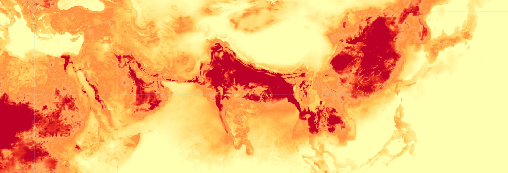
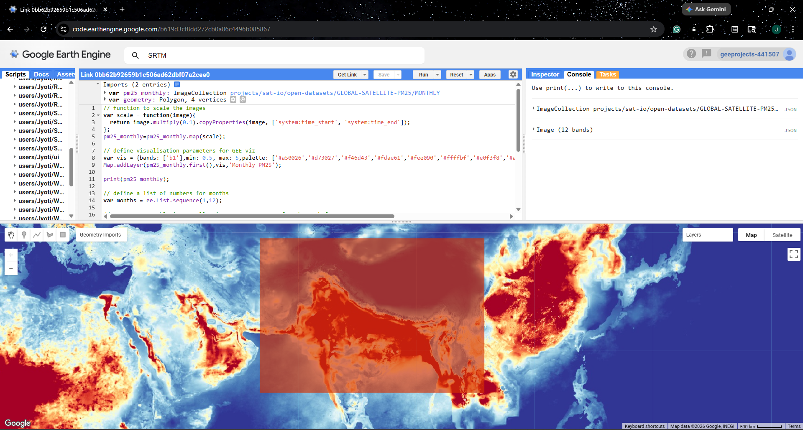
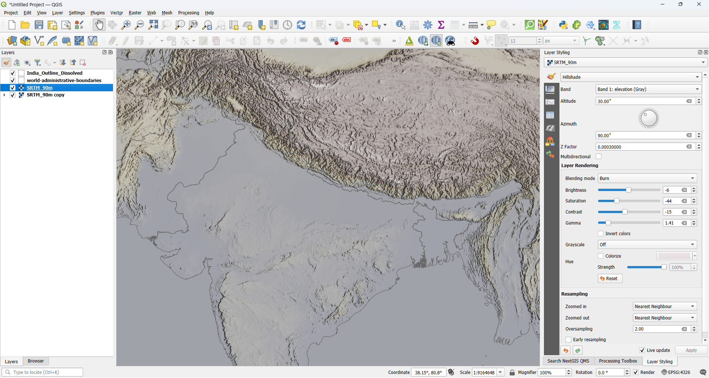
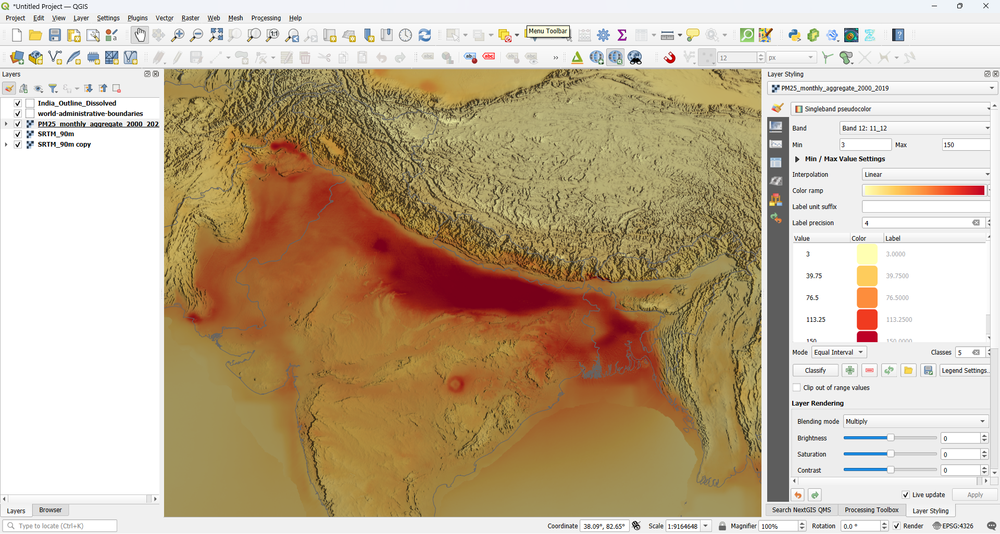
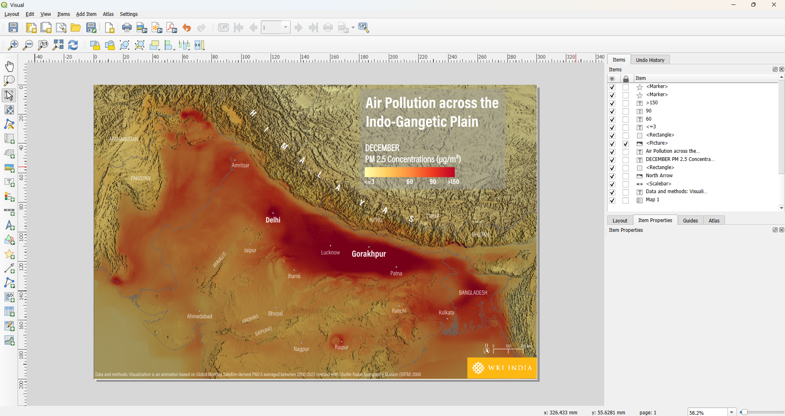

Particulate Matter (PM) 2.5 concentrations over Indian subcontinent and adjecent areas in the month of January (screenshot from GEE script)
Introduction
Why measuring PM 2.5 is necessary
Particulate Matter (PM) is often linked to serious health concerns and is widely regarded as a crucial air pollutant to study. It is a mixture of suspended particles in the air arising from both natural phenomena and human activities. In air quality studies, we primarily focus on two categories: PM10 and PM2.5, where the numbers represent particle sizes in micrometres. While PM 10 particles are 10 micrometres or less in diameter, PM 2.5 particles are even finer, at 2.5 micrometres or smaller. Its tiny size makes PM 2.5 a high-risk pollutant, as it can be inhaled deep into the lungs and enter the bloodstream.
For air quality experts, urban planners, and climate scientists, tracking the movement of these particles and their change over time is essential. This data provides us with the evidence we need to identify pollution hotspots and evaluate how our activities affect the air we breathe. A recent blog post by my colleague Nitisha Singh Gorakhpur Is Changing – So Is Its Air talks about how a fast-growing city like Gorakhpur in the Indo-Gangetic Plain is experiencing a shift in air quality alongside development.
Because PM 2.5 is largely invisible to the naked eye, it’s crucial for communities and decision-makers to understand the trend and scale of its exposure. Time-series visualisations, such as animated maps, help translate complex remote sensing data into a clear visual story. These visualisations provide a better starting point for public discussion, accountability, and informed action.
In the following sections, I will take you through the process of producing an impactful visualisation of PM2.5 time series over the Indo-Gangetic plain from 2000 to 2022. Before we jump to the workflow, let’s take a quick look at the objective of this blog – visualising seasonal variations in PM 2.5 and why they are a crucial data point.
Capturing Seasonal Variations
The concentration of PM2.5 varies by season. These changes are often driven by shifts in temperature, wind speed, and planetary boundary layer height. One way to visualise these changes is through long-term monthly composites. This means taking the average for one month across all the years in the study period; for example, in our case, all Januaries from 2000 to 2022. This approach reduces noise from unusual short-term events and makes monthly differences easier to interpret.
Studying these monthly variations also helps us identify patterns in seasonal PM 2.5 changes. Results show that PM 2.5 often peaks in winter owing to a combination of emissions, temperature inversions, and weaker winds that trap pollutants near the surface. Concentrations are generally lower in the monsoon season, as rainfall and strong atmospheric mixing help disperse particles in the air. Post-monsoon conditions can bring concentrations back up as drier weather returns and periodic sources add to the background load.
We are going to turn this understanding into a visual story by transforming long-term monthly averages into a smooth time-series animation. This will help us visualise when pollutants tend to intensify and how hotspots shift geographically over the year. We would also be able to visualise the role of the mountain ranges surrounding the Indo-Gangetic plains.
In the following sections, I will take you through the workflow, focusing on producing consistent monthly frames and automating the process of exporting those frames to turn our final visual into an animation.
Data & Platforms
I have used Global Monthly Satellite-derived PM 2.5 from Awesome GEE Community Catalog, which is one of my favourite data sources for all kinds of remote sensing datasets. The dataset provides monthly and annual gridded estimated of ground-level PM 2.5 from 1998 to 2022. This makes it ideal for visualising a consistent long-term time series for any region. I have used Google Earth Engine (GEE) to process and export the data for our region of interest.
To add depth to the visualisation, I have used elevation data from Shuttle Radar Topography Mission (SRTM) downloaded from GEE. This is important in this case, as it will help highlight the region's geography, which plays a vital role in shaping the movement of air particles.
After exporting the relevant rasters, I have used QGIS for visualisation, designed the template, and used PyQGIS to automate the export of each frame of my time series. Being an open-source tool, it’s clearly one of my favourite tools for cartography. In the end, I have used python to create an animated GIF.
Workflow
Downloading Data from GEE Community Catalog
The first step is to process the data into a format that’s easy to download and automate. Whenever I need to visualise time-series data as an animation or GIF, I process the data as a multi-band single raster. This allows me to iterate over the bands of the same raster without having to toggle multiple rasters in QGIS.
We will begin by filtering the dataset to our desired time period. I have chosen a time period of 2000 to 2022 in this case. Since we want to visualise monthly composites of PM 2.5, we will process the filtered Global Monthly Satellite-derived PM 2.5 using .map() to iterate over months. This will result in an image collection, with each image corresponding to a month in a year. Finally, we will convert the image collection to a single multi-band image using .toBands() and then export the result to our Google Drive. You can find the full GEE code here.

Google Earth Engine (GEE) Code Editor
Visualization in QGIS
Now, we will set up a new QGIS project with some basic layers to add more context to the visual. I have used SRTM data to create a hillshade backdrop that gives the map a 3-dimensional feel. I have also added international and India boundaries, which help add geographical context to the map.

QGIS canvas showing SRTM and boundaries added as layers
Next, let us bring in monthly composites of PM 2.5 and visualise one of the bands using a colour ramp that highlights higher PM 2.5 concentrations, for instance, yellow to maroon. While doing this step, I also make sure to check the colour ramp and corresponding values against other bands. This helps keep the ramp and legend consistent across all the bands of the raster.

PM 2.5 raster downloaded from GEE loaded in QGIS
We will now design a map layout by adding fixed and dynamic elements. In this case, our fixed elements would be the main title, data source, labels, legend, north arrow and scale bar, while our dynamic element would be the month name. We will choose suitable names for the layout and the dynamic element, as we will need them when automating our exports.

QGIS map layout with fixed and dynamic elements
Automating the frame export with PyQGIS
Python in QGIS is a powerful tool, especially when you must perform repetitive tasks. In this case, we need to export 12 frames, one for each month of the year. If we were to do this manually, it would take about 6-7 minutes (that’s the time I took to export the frames manually). However, with the help of Python in QGIS, we can finish this task in around 5 minutes! That’s an efficiency improvement of 13-15%, which might seem modest for 12 frames, but imagine performing this task for 100 frames. Moreover, automating tasks this way allows you to simply click once, walk away, and maybe hydrate yourself or take a 5-minute walk while the script runs. Another advantage of automating tasks is that the same code can be reused for any number of exports, with some minor tweaks and adjustments in the code.
Please note that I have not accounted for the time spent writing the Python script, as I already had a script ready from another project. These days, I mostly use a generative AI tool to write scripts for me, so that’s a huge time-saver as well.
You can simply copy-paste the following code in your python console in QGIS to save more time!
import os
from qgis.core import QgsProject, QgsLayoutItemLabel, QgsLayoutExporter
layer_name = "PM25_monthly_aggregate_2000_2022"
layout_name = "Visual"
output_folder_name = "Frames_QGIS"
months = [
"JANUARY", "FEBRUARY", "MARCH", "APRIL", "MAY", "JUNE",
"JULY", "AUGUST", "SEPTEMBER", "OCTOBER", "NOVEMBER", "DECEMBER"
]
project = QgsProject.instance()
# 1. Setup Output Directory (Relative to project file)
project_path = os.path.dirname(project.fileName())
output_path = os.path.join(project_path, output_folder_name)
if not os.path.exists(output_path):
os.makedirs(output_path)
# 2. Access Layer and Layout
layers = project.mapLayersByName(layer_name)
if not layers:
print(f"Error: Layer '{layer_name}' not found.")
else:
layer = layers[0]
layout = project.layoutManager().layoutByName(layout_name)
if not layout:
print(f"Error: Layout '{layout_name}' not found.")
else:
# 3. Iterate through months
for i, month in enumerate(months):
band_number = i + 1
# Change the band while keeping existing symbology
# This works for Singleband Pseudocolor and Paletted renderers
layer.renderer().setBand(band_number)
layer.triggerRepaint()
# 4. Update the Label in the Layout
for item in layout.items():
if isinstance(item, QgsLayoutItemLabel):
# We look for the partial string to identify the correct label
if "PM 2.5 Concentrations" in item.text():
item.setText(f"{month}\nPM 2.5 Concentrations (µg/m³)")
# 5. Exporting
file_name = f"PM25_{band_number:02d}_{month}.png"
file_path = os.path.join(output_path, file_name)
exporter = QgsLayoutExporter(layout)
settings = QgsLayoutExporter.ImageExportSettings()
settings.dpi = 300 # Standard high resolution
result = exporter.exportToImage(file_path, settings)
if result == QgsLayoutExporter.Success:
print(f"Exported: {file_name}")
else:
print(f"Failed to export: {month}")
print("Done! All frames are in the Frames_QGIS folder.")
Preparing the GIF with Python
This brings us to the final step: putting all the frames together into an animation. I find the Pillow (PIL) library to be one of the best approaches to do so. Find the full code (AI-generated) below to copy-paste into your favourite Python IDE and make some minor tweaks to save the final GIF in your desired folder.
import os
from PIL import Image
def create_gif(folder_path, output_path):
# 1. Get PNGs and sort alphabetically/numerically by name
files = [f for f in os.listdir(folder_path) if f.lower().endswith('.png')]
files.sort() # This sorts them exactly as they appear in your folder list
frames = []
for name in files:
img = Image.open(os.path.join(folder_path, name)).convert("RGBA")
# Handle transparency
bg = Image.new("RGB", img.size, (255, 255, 255))
bg.paste(img, mask=img.split()[3])
frames.append(bg.quantize(colors=256))
# 2. Save the GIF
frames[0].save(
output_path,
save_all=True,
append_images=frames[1:],
duration=600,
loop=0,
optimize=True
)
print(f"Success! Processed {len(files)} frames.")
# Update your paths here
path = 'Frames_QGIS'
out = os.path.join(path, 'PM25_Animation_2000_2022.gif')
create_gif(path, out)
Reflections & Conclusion
The final visualisation shows major monthly shifts in PM 2.5 concentrations in the Indo-Gangetic plain. We can clearly see the winter pollution spiking up, monsoon season washing out the concentrations, and the post-monsoon rebound. While this pollutant might be invisible due to its small size, visualisations like this help in making the trend visible. Moreover, presence of hillshade as a background context makes the bowl effect of the region quite visible. The region is essentially a geographic basin, enclosed by mountain ranges on all sides. When temperature inversions occur in the winter, these mountains act as a barrier that traps cold air near the ground, making it difficult for pollutants to disperse and leading to higher concentrations.
Final animation showing monthly variations in PM 2.5 concentrations
While understanding patterns in geospatial data is the goal, achieving these insights requires selecting the right tools and leveraging automation. Moreover, automated workflows help remove the risk of human error and ensure consistency in the final product. More recently, I have realised that I can move away from repetitive tasks by shifting the heavy lifting of data processing to tools like GEE and PyQGIS, and focus more on interpreting the data and telling the story behind the map.
I would highly encourage you to try this approach with other indicators or datasets (such as Nitrogen Dioxide from Sentinel3, Land Surface Temperature from Landsat8, or Vegetation Indices). Do share your results with me whenever you get a chance.
Acknowledgement
I would like to express my gratitude to the people and initiatives that encouraged me to put together this blog:
Sincere thanks to Nitisha Singh, whose blog post Gorakhpur Is Changing – So Is Its Air inspired this visual narrative.
This visualisation began as a submission for the 2025 #30daymapchallenge. I am grateful to the entire mapping community and the challenge itself for providing a platform to explore creative cartography.
I am grateful to Raj Bhagat P, Rama Thoopal and Nileena S for their invaluable feedback and support in enhancing the initial map into the final time series presented here.
I would like to thank Ujaval Gandhi and Vigna Purohit for their guidance through the PyQGIS course by SpatialThoughts. The course proved instrumental in helping me bridge the gap between manual geospatial tasks and automated workflows.
Finally, I would like to thank YOU for taking the time to read this blog. Feel free to email me at jyoti9412nitk@gmail.com with your comments and feedback.